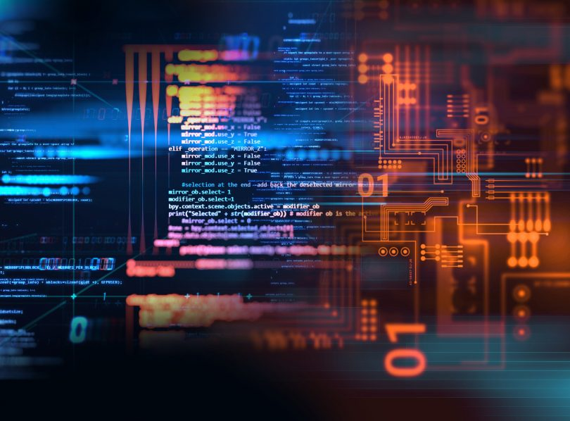

La programación es el proceso utilizado para idear y ordenar las acciones necesarias para realizar un proyecto, preparar ciertas máquinas o aparatos para que empiecen a funcionar en el momento y en la forma deseados o elaborar programas para su empleo en computadoras. En la actualidad, la noción de programación se encuentra muy asociada a la creación de aplicaciones informática y videojuegos. Es el proceso por el cual una persona desarrolla un programa valiéndose de una herramienta que le permita escribir el código (el cual puede estar en uno o varios lenguajes, como C++, Java y Python, entre otros) y de otra que sea capaz de “traducirlo” a lo que se conoce como lenguaje de máquina, que puede comprender el microprocesador.
